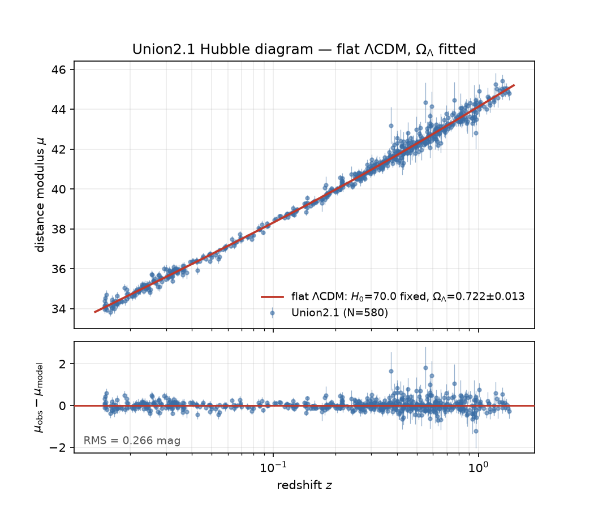

Getting started with ASTRA¶
This tutorial gets you started with ASTRA — the
specification for recording an analysis's inputs, outputs, and methodological
decisions — and the astra plugin, which teaches your agent to
work with it. The full specification lives at
astra-spec.org.
We work through a classic cosmology problem: using the relation between the brightness and redshifts of supernovae to estimate the dark energy content of the universe. We will fit the standard ΛCDM model of cosmology to 580 Type Ia supernovae from Suzuki et al. 2012. Mechanically, this is a straightforward least-squares fit with a single free parameter, Ω_Λ.
What you need¶
Two things on your PATH:
| Tool | Why | Install |
|---|---|---|
uv |
Runs Python and the ASTRA CLI | astral.sh/uv |
| Claude Code or Codex | The agent doing the work | npm install -g @anthropic-ai/claude-code / npm install -g @openai/codex |
Then the astra plugin, which teaches your agent the format:
There is nothing else to install: the plugin runs the ASTRA CLI through uvx,
which fetches it on first use.
We recommend that you let your agent do the work from here on out — the tutorial gives you copy-pasteable prompts.
Make a directory to work in, and start your agent in it:
Then start your agent.
Everything in a text block below is a prompt: paste it into the agent, not
into your shell. Shell commands appear only where you are meant to look at
something yourself.
The rest of the tutorial is intentionally sparse — we leave your own agent to do some of the explaining for us.
1. The data¶
Download the Union2.1 supernova compilation from the Supernova Cosmology
Project into a data/ directory:
https://supernova.lbl.gov/Union/figures/SCPUnion2.1_mu_vs_z.txt
Then show me the first few rows and tell me what's in the file.
2. The spec¶
Say what the analysis is:
Use the astra skill to set up an astra.yaml for this. I want to fit a flat
LCDM model to this data to recover Omega_Lambda, varying only Omega_Lambda
and using the metadata in the file's header.
Two outputs: the best fit, and a downstream best-fit Hubble diagram figure
with an absolute panel and a residuals panel.
In this first pass, let's only use inputs, outputs, and recipes. Please walk
me through each element that you add.
When the agent writes astra.yaml, a hook fires and validates it immediately.
You should see something like this:
version: "0.0.12"
name: "Cosmic expansion from Type Ia supernovae"
inputs:
- id: union21
type: data
source: data/SCPUnion2.1_mu_vs_z.txt
description: >
Union2.1 SN Ia compilation. 580 rows spanning z = 0.015 to 1.414. The
header gives the assumed absolute magnitude, M(h=0.7), so the distance
moduli carry an h = 0.7 calibration.
outputs:
- id: best_fit
type: metric
description: >
Best-fit Omega_Lambda with its uncertainty, chi-squared, dof. H0 is held
at 70 km/s/Mpc to match the calibration in the data file's header, not
fitted.
inputs: [union21]
recipe:
command: python src/fit.py --data {inputs.union21} --out {output}
- id: hubble_diagram
type: figure
description: >
Two panels sharing a redshift axis: distance modulus with the best-fit
curve, and residuals below it.
inputs: [union21, best_fit]
recipe:
command: >
python src/plot_hubble.py --data {inputs.union21} --fit
{inputs.best_fit} --out {output}
3. Run it¶
ASTRA does not run anything: it validates and inspects. The choice of runner stays yours, and here the runner is the agent.
Use uv to set up a virtual environment and install any needed packages.
Then implement the analysis. Write the scripts the recipes call, run them, and
show me the Hubble diagram.
Where results go
ASTRA's {output} is a placeholder; because nothing in ASTRA executes
recipes, nothing in ASTRA decides where output lands either. That is yours
to choose. results/<output_id> is a good default.
One number comes back: Ω_Λ = 0.722 ± 0.013.

4. Check it against the paper¶
Is our result consistent with that found in the original paper? We check it by quoting them — and ASTRA verifies the quote against the paper itself.
The paper that published this catalogue is Suzuki et al. 2012, arXiv
1105.3470. Cache the paper, verify their own Omega_Lambda from these
supernovae, and show me the output. Then record it in astra.yaml as a prior
insight with the quote as evidence, and tell me how our constraint compares to
theirs.
The text is searched in the cached PDF; running astra paper verify-quote
gives:
prior_insights:
suzuki_2012_result:
label: "Union2.1's own dark-energy constraint"
claim: >
Suzuki et al. (2012) constrain the dark energy density from these
supernovae alone, in a flat universe, to Omega_Lambda = 0.705
(+0.040, -0.043) including systematic errors.
created_at: "2026-07-27T00:00:00Z"
tags: [physics, priors]
evidence:
- id: suzuki_2012_sne_alone_flat_lcdm
doi: "10.48550/arXiv.1105.3470"
quote:
exact: "In a flat Universe, SNe Ia alone constrain the dark-energy density, ΩΛ, to be ΩΛ = 0.705+0.040−0.043 including systematics"
location:
value: "page=17"
If you want to run the check yourself:
✓ Schema validation passed
✓ Semantic validation passed
Verifying evidence...
✓ Evidence (prior_insights): 1/1 verified
Our central value agrees with theirs, but look at the error bars!
5. Add a decision¶
Ours are three times tighter — 0.722 ± 0.013 against their 0.705 ± 0.04, on the same 580 supernovae. Find out why:
Let's understand why our error bars are so much tighter than theirs. Download
the two Union2.1 covariance files:
https://supernova.lbl.gov/Union/figures/SCPUnion2.1_covmat_nosys.txt
https://supernova.lbl.gov/Union/figures/SCPUnion2.1_covmat_sys.txt
Work out which one the main data file's error column is using, then add a
decision to astra.yaml to switch to the other, and see what impact it has on
our constraint.
The error column matches the no-systematics file: our fit has been statistical only, and everything the systematic covariance knows was sitting in a file we had not opened. Switching to it gives:
| Ω_Λ | |
|---|---|
| ours, statistical | 0.722 ± 0.013 |
| ours, statistical + systematic | 0.714 ± 0.030 |
| Suzuki et al., published | 0.705 (+0.040, −0.043) |
The value barely moves. The uncertainty more than doubles — and only then is it comparable with the paper's, which includes systematics too. Our second row agrees with theirs to 0.2σ: their data, their systematics, their method.
A comparison of best-fit numbers would have ranked this decision as nearly irrelevant. It is the difference between a number that resembles theirs and a number you can put beside theirs.
Going further¶
Three more decisions are sitting in this analysis, none of them implemented here:
- Optimiser — likely a null result, and worth recording as one.
- Redshift range — the high-z supernovae carry the longest lever arm and the worst systematics.
- Dark energy model — assume w = −1, or fit it. The weaker assumption, at the cost of a strong degeneracy with Ω_Λ.
Each is one more option, one more recipe argument, and one more reason written down.
The astra plugin page covers what the plugin ships, and the full
ASTRA documentation lives at astra-spec.org — the
format reference, the schema, and a ground-up
getting started guide.